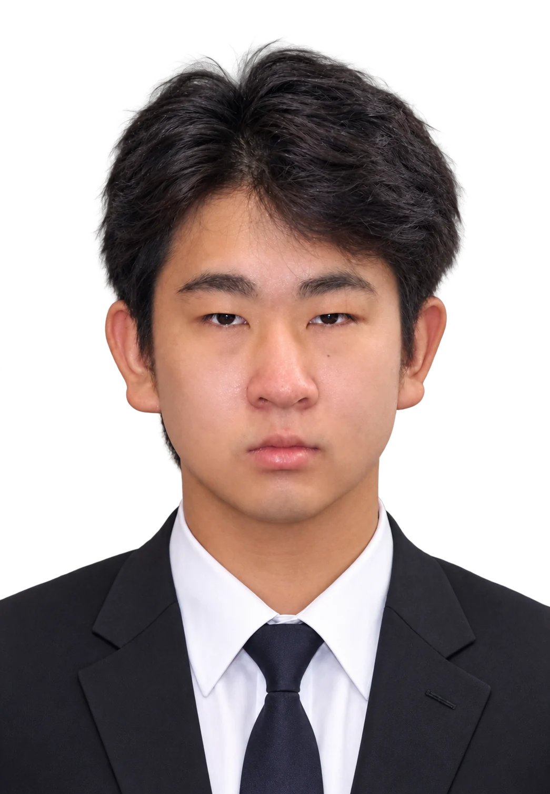
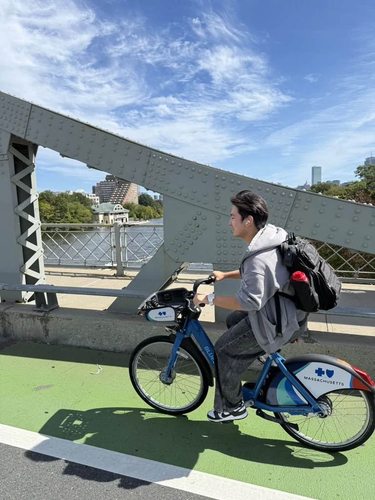
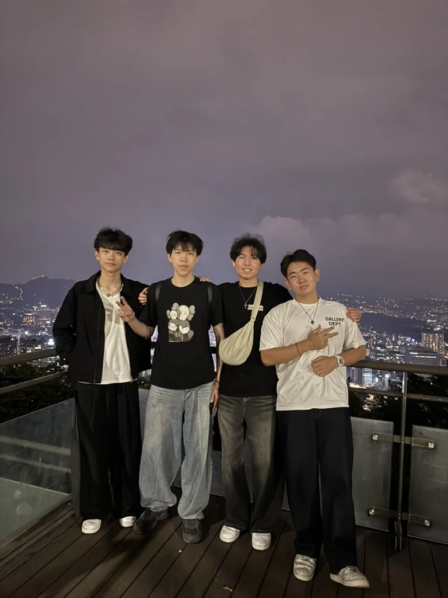
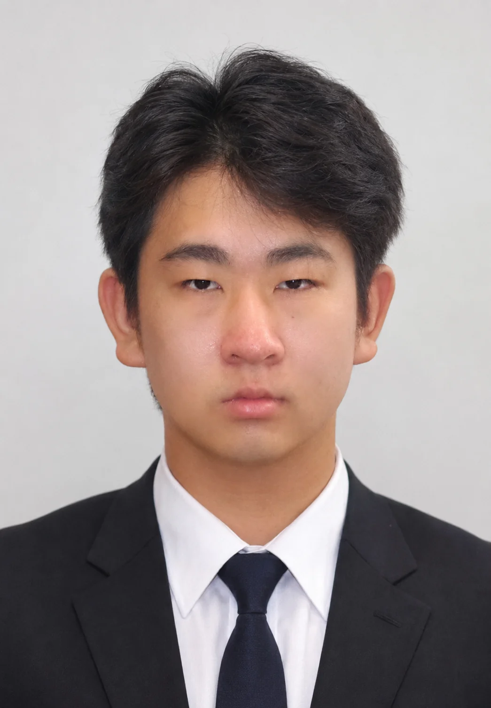
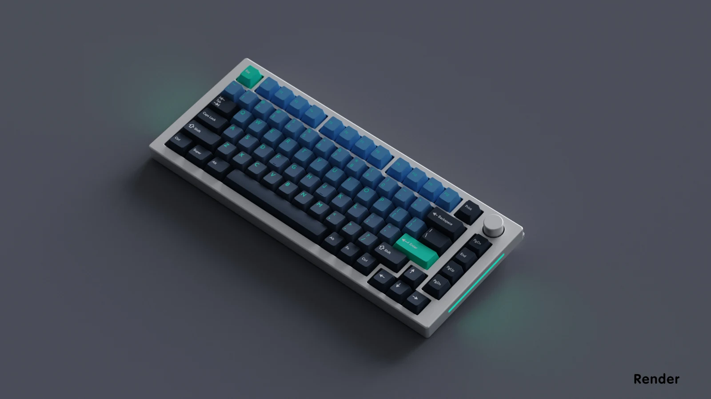

01
HEALTHCARE / FOUNDER
Aurex Medical
Medical and scientific supplies for the people doing the work. Building a supply company serving labs and classrooms, working with BU, NYU, and more, with medical products also available on Amazon.



Biology @ Boston University
Pre-med · Licensed EMT
Building a few things on the side.

AIDEN “VIRO” YUE / BU ’28I’m Aiden, a junior at Boston University studying biology on a pre-med pathway. I’m interested in how medicine, technology, and business can make people’s lives better—and I like getting hands-on with all three.
That’s taken me from cardiovascular research and becoming a licensed EMT to designing keyboards, building businesses, and helping charter Nu Alpha Phi, BU’s only Asian fraternity.
Originally from Boston, raised in Southern California. Usually working on an idea, making plans with friends, or finding somewhere new to go.
The professional side of meFrom a product on a screen to something someone can actually use.
Medical and scientific supplies for the people doing the work. Building a supply company serving labs and classrooms, working with BU, NYU, and more, with medical products also available on Amazon.
A Roblox game design studio turning ideas into worlds people want to spend time in. Four games in development, with a growing community along for the build.
Enter the studioOwning the process from the first round of product research to a live listing. Researching demand, sourcing products, building listings, and managing launches, fulfillment, and growth across multiple products.
Before medical supplies and game studios,
there were keyboards.

Custom keycaps, deskmats, cables, and accessories. An obsession with color and the small details.
Design, color-matching, vendor partnerships, product launches, and getting every order out the door.
More than $250K in revenue and 5,000 global orders. My first real lesson in turning an idea into a business.
The lab, the community, and the people I get to learn from.
Licensed EMT and pre-med biology student at Boston University. Building the knowledge and hands-on experience to pursue a future in medicine.
BOSTON UNIVERSITY · CLASS OF 2028At Huntington Medical Research Institutes, I worked with Dr. Robert Kloner’s team studying nicotine’s effects on cardiovascular disease and cancer.
HMRI · JUN 2023 – MAY 2024Helped found and charter Nu Alpha Phi at Boston University, the only Asian fraternity on campus. Now contributing as a National Board intern.
NU ALPHA PHI · KAPPA CHAPTERE-commerce and marketing strategy, helping brands refine product positioning, launch plans, and their online presence.
Engineering Possibilities Summit Fellow. Exploring technology, innovation, and leadership through mentorship.
Completed my first year with a 3.9 GPA and Dean’s List honors before transferring to Boston University.
New places. Familiar faces.
A few moments worth keeping.